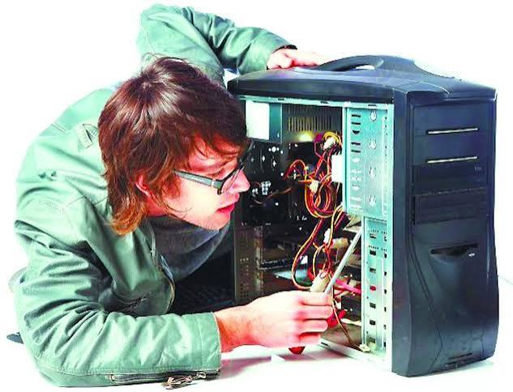

El mantenimiento de equipos es fundamental para prolongar la vida útil de cualquier computadora. Nuestros servicios permiten prevenir fallas, mejorar el rendimiento y mantener tus equipos funcionando correctamente. Realizamos limpieza física, eliminación de polvo, cambio de pasta térmica, revisión de componentes y optimización del sistema operativo.
Cuando un equipo presenta fallas, efectuamos un diagnóstico completo para identificar el problema y realizar la reparación correspondiente, sustituyendo componentes dañados cuando es necesario. También ofrecemos mejoras de rendimiento mediante la instalación de memoria RAM, unidades SSD y actualización de hardware para que tu computadora funcione con mayor velocidad y eficiencia.

| Tipo de mantenimiento | Descripción | Beneficio |
|---|---|---|
| Preventivo | Limpieza interna y externa del equipo, optimización del sistema y revisión de componentes. | Evita fallas y prolonga la vida útil de la computadora. |
| Correctivo | Reparación de equipos con fallas de hardware o software y reemplazo de piezas dañadas. | Recupera el funcionamiento normal del equipo. |
| Productivo | Actualización de memoria RAM, instalación de SSD y optimización del rendimiento. | Mayor velocidad, estabilidad y mejor desempeño. |